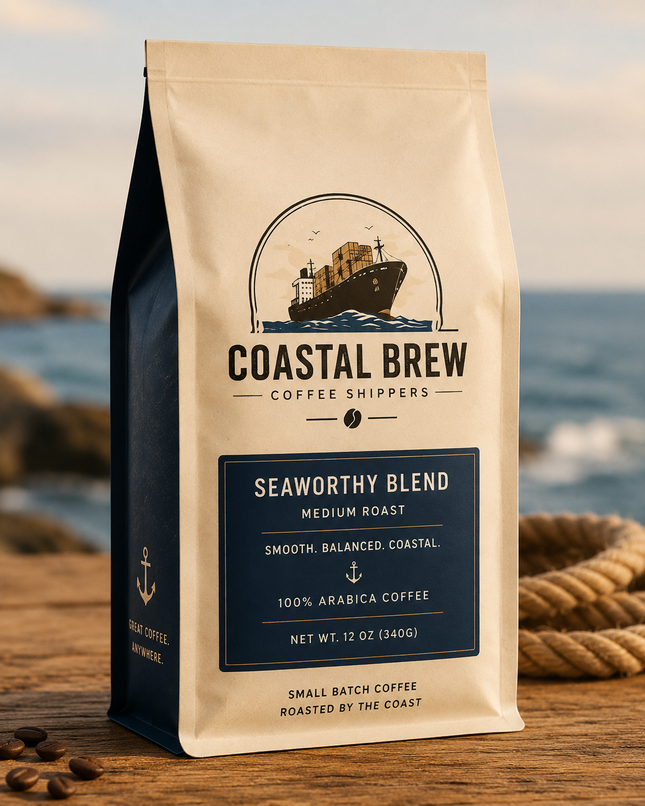
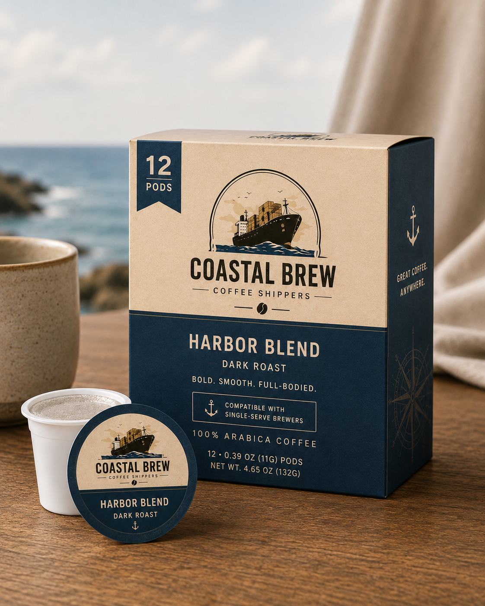
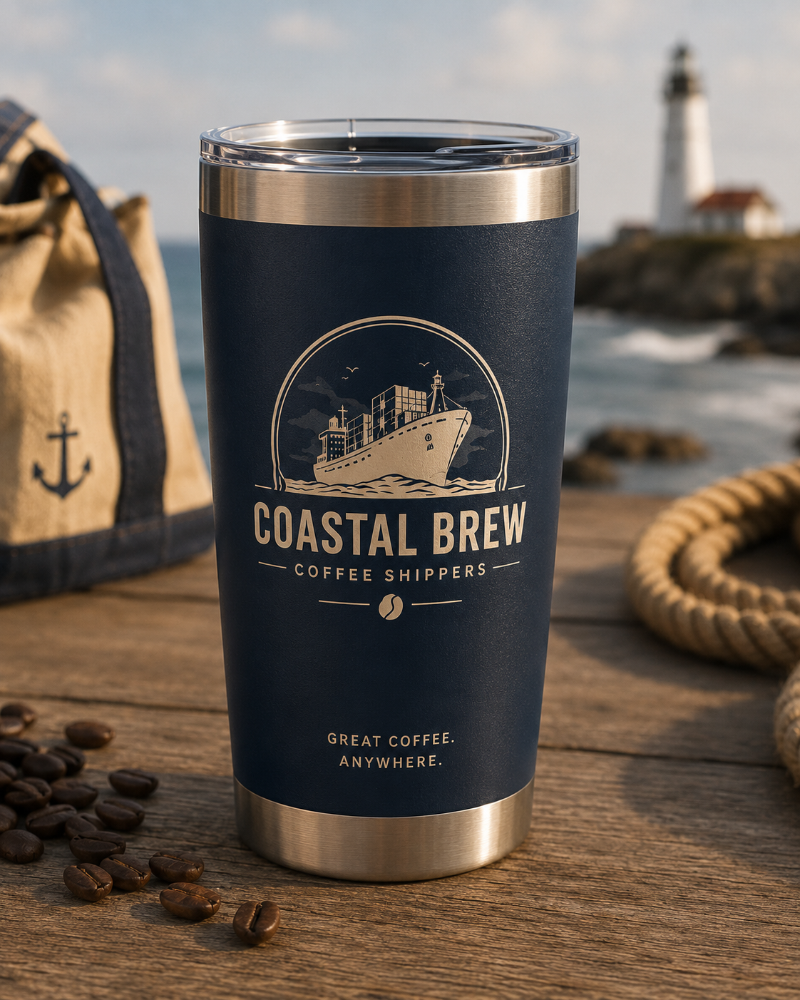
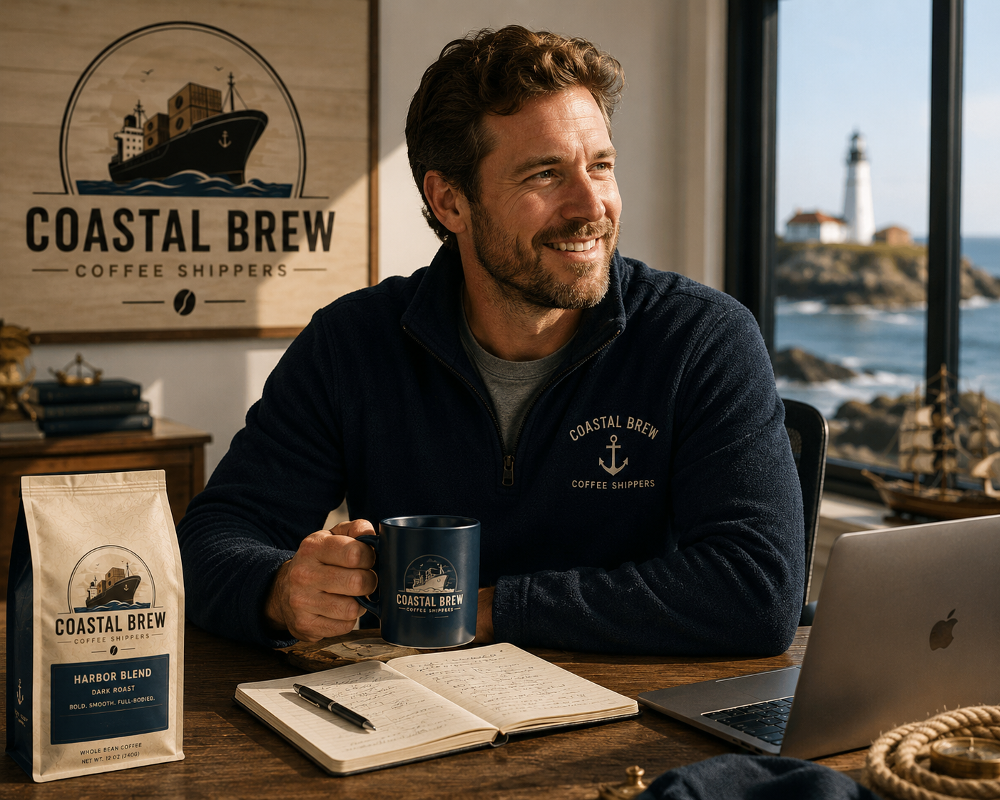
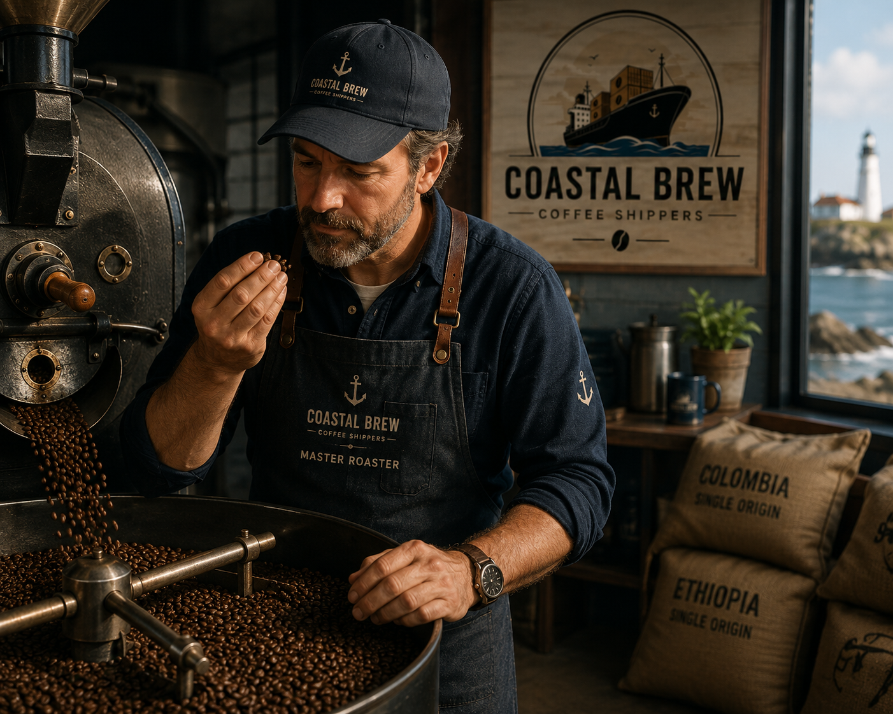
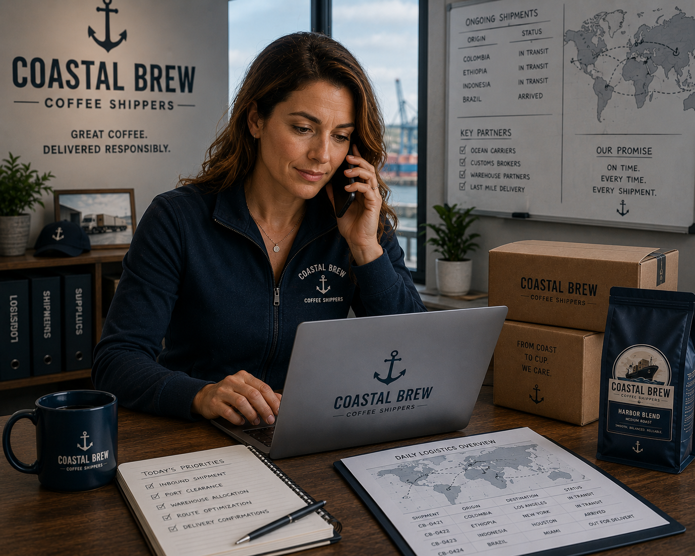
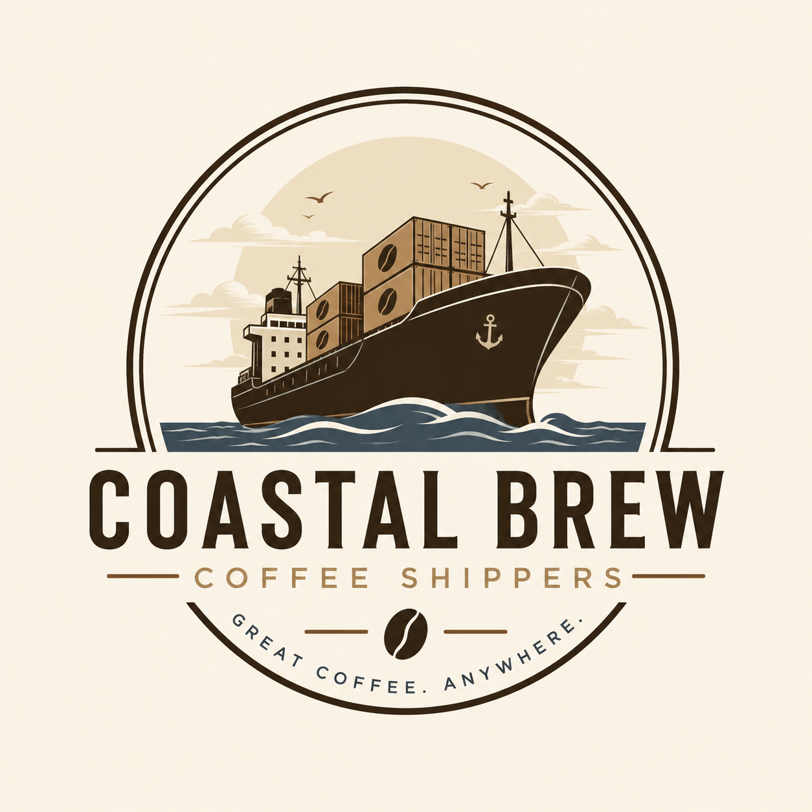

Our Philosophy
Great coffee is more than a product.
At Coastal Brew Coffee Shippers, we believe exceptional coffee should feel intentional — from the farms we partner with to the roast profiles we develop and the care we take in every shipment.
Inspired by the rhythm of the coast, we combine expertly sourced beans, responsible partnerships, and dependable delivery to create coffee experiences that feel crafted, connected, and memorable.
Our Collection
Crafted for Every Coffee Ritual
Coffee experiences crafted for mornings at home, busy commutes, and everything in between.

Coastal Collection
Thoughtfully sourced and expertly roasted coffees inspired by the spirit of the coast.

Harbor Pods
Convenient, café-quality coffee pods crafted for smooth flavor and effortless mornings.

Coastal Goods
Premium drinkware and thoughtfully designed accessories inspired by life along the coast.
Our Crew
The People Behind Coastal Brew
From roasting and sourcing to logistics and customer experience, our team is passionate about creating exceptional coffee experiences.

Everett Hale
Founder & Owner
Inspired by coastal harbor towns and a passion for thoughtfully crafted coffee, Everett founded Coastal Brew to combine premium small-batch roasting with dependable nationwide delivery.

Henry Calloway
Master Roaster
Drawing inspiration from coastal cafés and small-batch roasting traditions, he works closely with sourcing partners to craft coffees that emphasize consistency and depth in every cup.

Olivia Mercer
Director of Logistics
With a background in supply chain coordination and customer operations, she combines precision, organization, and a customer-first mindset to deliver a seamless experience with every shipment.
Contact Us
Start the Conversation
Whether you're searching for the perfect roast, have questions about an order, or want to learn more about Coastal Brew, we'd love to hear from you.

Visit Us
Coastal Brew Coffee Shippers
145 Harbor Exchange Way
Portland, ME 04101
Call Us
(207) 555-1847
Monday - Friday
8AM - 5PM EST
Email Us
hello@coastalbrew.com
support@coastalbrew.com
Customer support available daily.